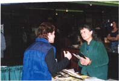

| Panorama d'événements |
|
|
[Toronto] Avec la bénédiction de Maître, parallèlement à leurs activités habituelles de partage des enseignements de Maître Ching Hai par des conférences vidéo et par des expositions, les initiés de Toronto ont maintenant une voie de diffusion vers une plus large audience via la télévision. Grâce au cable TV et aux conférences vidéo, nous pouvons maintenant atteindre les trois millions d'habitants des régions du Greater Toronto, de Mississauga et de Brampton.
Dans le but de pouvoir émettre ainsi à la télévision, notre organisation est devenue membre de "The Horizon Interfaith Communication Media Council" , qui est composé de personnes représentant diverses religions et groupes spirituels. Le projet de "The Interfaith Council" est de se partager le temps alloué par la Roger's TV au magazine"Horizon" pour des émissions qui allègent l'atmosphère de chaque dimanche matin avec des programmes focalisés sur diverses poursuites et enseignements religieux.
En tant que nouveau membre de la communauté de programmes "Horizon", on nous a proposé d'occuper les dates des prochaines diffusions (des dimanches) par trois des conférences vidéo de Maître Ching Hai, chacune d'une durée de 27,5 min :
Roger's Télévision - Canal 10:
21 mai à 11h EST
4 juin à midi EST
18 juin à 11 h EST
De prochaines dates de diffusion seront annoncées prochainement dès que nous aurons reçu l'approbation.
[Vancouver] Les initiés de Vancouver ont été ravis d'avoir un stand à l'Expo du Corps, de l'Ame et de l'Esprit, tenu du 17 au 19 Mars à Vancouver, British Columbia. Nous avons beaucoup appris et ressenti une grande joie en faisant connaître Maître à beaucoup de personnes.
Notre stand a attiré de nombreux visiteurs parmi lesquels les participants de l'Expo des stands avoisinants qui revenait sans cesse visionner la cassette vidéo de Maître. Un voisin s'est assis sur une chaise juste en face de la vidéo et l'a regardé pendant longtemps. Les femmes d'un stand voisin regardaient aussi la vidéo à chaque fois qu'elles en avaient l'occasion, disant qu'elles trouvaient la voix de Maître très apaisante. Tous les visiteurs se sont assurés d'emporter des livrets-échantillons et des revues pour pouvoir en savoir plus sur Maître.
Avec l'acceptation florissante des méthodes orientales de soins tel que l'acupuncture, nous n'étions pas surpris de voir un stand d'acupuncteurs chinois. Tous ceux qui travaillaient au stand d'acupuncture sont venus nous voir et ont pris des livrets-échantillons et des revues en chinois pour eux et leur famille . Plus tard, nous les avons vu assis à l'entrée, en train de lire intensément les documents.
Pendant toute l'exposition, nous avons organisé des séminaires dans une autre salle pendant. Le samedi et le dimanche nous avons eu un créneau horaire de deux heures. Cela nous a donné une autre opportunité d'introduire les enseignements de Maître à ceux qui assistaient à l'Expo. Après le séminaire, plusieurs personnes sont venues poser des questions. Il n'y avait pas de doute qu'ils étaient intéressés d'en savoir plus sur Maître. Une femme très désireuse de regarder les cassettes de Maître en a emprunté quelques-unes. Elle a échangé ces cassettes pour d'autres quelques jours plus tard, et revenue le dimanche pour elle apprendre la Méthode pratique.
Durant les trois jours de l'Expo nous avons rencontré et nous sommes liés dans l'amour avec des personnes de différents modes de vie. Nous avons aussi remarqué que les gens étaient tellement ouverts aux enseignements de Maître. Ils en pouvaient s'empêcher d'être impressionnes par Son amour, Sa sagesse et Sa beauté. Nous remercions Maître pour cette merveilleuse opportunité de partager Ses bénédictions, et sommes très désireux de participer à tout évènement où nous pourrons le grand honneur d'informer les gens sur Elle et la Méthode Guan Yin.
|  | Captivés par la mélodieuse voix de Maître, les gens se sont arrêtés au stand du centre de Vancouver pour regarder Ses cassettes vidéo et poser des questions. |
|
|